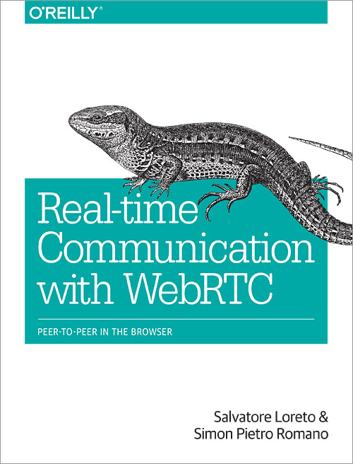

2017/03/16 - WebRTC API Example¶
The problem I met before …¶
I read this book O’Rreilly Real-Time Communication with WebRTC last semester. When I followed the code in this book and run, it always threw some errors or bugs. What deeply annoyed me was some functions or methods are old and can not be used anymore. So I have to spend a lot of time to check the problem is from either my typing error or the wrong code.
{kind=link}
A very good tutorial¶
This is the good tutorial about WebRTC.
In this website, it introduces the basic 3 apis(GetUserMedia, RTCPeerConnection , RTCDataChannel) step by step, and also combines them together in an application to demo the power of WebRTC, just like the application in the last chapter of O’Relly’s book.
I download its source code and follow the tutorial to try all six examples. And finally I run all of them successfully.
The application : Take a photo and share it via a data channel.
{kind=link}
Some demos¶
MediaRecorder : Link to MediaRecorder.
This website can record from your camera, then plackback and download.
WebRTC Chat : Link to WebRTC Chat.
This website would create an random chatroom number, and people can join this room to view the real-time video of everyone in this room and chat to each other.